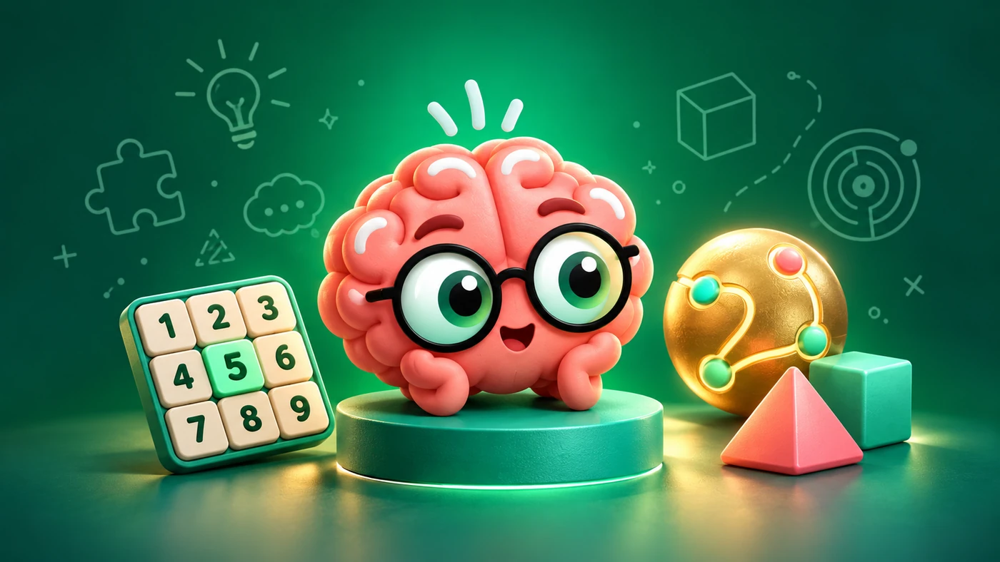

Выберите игру
Числа, память, логика или наблюдение — начните с того, что интересно прямо сейчас.
Игры для любопытного ума
Готовится обновление 1.2.0
Считайте, запоминайте, ищите закономерности. Коллекция небольших игровых задач для вашей следующей паузы.
В магазинах пока предыдущие версии.
Новые игры и экраны ниже — превью будущей 1.2.0.

Загляните в обновление 1.2.0
От первого найденного числа до последнего хода в головоломке. В готовящейся версии собраны 13 разных мини-игр — выбирайте по настроению.
01 / 04 · Числа
Один пример, одна последовательность, одна следующая цель. Начните с задач, где всё решают числа.
Решайте арифметические примеры и вводите ответ.
Находите числа на поле по порядку.
02 / 04 · Память
Заметьте детали, удержите их в памяти и проверьте себя следующим действием.
Запоминайте фигуры и их признаки.
Открывайте карточки и находите пары.
Запоминайте контур и повторяйте фигуру по точкам.
03 / 04 · Логика
Просчитайте маршрут, найдите подходящее число или измените всего одну деталь. Здесь хочется попробовать ещё раз.
Заполняйте сетку 9 × 9, используя заметки и кандидатов.
Решайте головоломки со спичками.
Открывайте клетки, отмечайте мины и читайте подсказки.
Планируйте путь шара к выходу через поле с препятствиями.
04 / 04 · Наблюдение
Среди цветов, стрелок и похожих объектов найдите то, что имеет значение для следующего шага.
Находите прямоугольники с одинаковыми угловыми плитками.
Следуйте направлению центральной стрелки.
Узнавайте объект по его отличительным признакам.
Запоминайте факты и отвечайте на вопросы.
Реальные экраны готовящейся версии 1.2.0, снятые в iOS Simulator. Опубликованные версии пока выглядят иначе.
В своём темпе
В превью 1.2.0 каждая мини-игра — часть общей коллекции. Можно вернуться к любимой задаче или попробовать другой способ играть.
Числа, память, логика или наблюдение — начните с того, что интересно прямо сейчас.
Посмотрите задачу и попробуйте свой первый ход. Вернуться к правилам можно из самой игры.
В 1.2.0 собирайте звёзды, открывайте игровые ранги и сохраняйте результаты в своём локальном профиле.
Игры и скриншоты в галерее — превью готовящейся версии 1.2.0. На 25 октября 2026 года в App Store доступна 1.0.7, в RuStore — 1.1.8. Обновление 1.2.0 ещё не опубликовано; после перехода в магазин проверьте доступную там версию.
Текущая версия доступна на iPhone и iPad через App Store, а на Android — через RuStore. Кнопки на этой странице ведут на официальные страницы приложения.
В готовящейся версии можно создавать локальные профили игроков и хранить результаты отдельно. Звёзды, медали и ранги относятся к прохождению игр.
В настройках доступен выбор английского, русского, украинского, немецкого, испанского, французского, итальянского, польского, португальского, турецкого и иврита. Часть новых панелей пока остаётся на английском или русском.
Brain Evolution
Откройте приложение в магазине для вашего устройства. Версия 1.2.0 с показанными выше новыми играми ещё готовится к публикации.